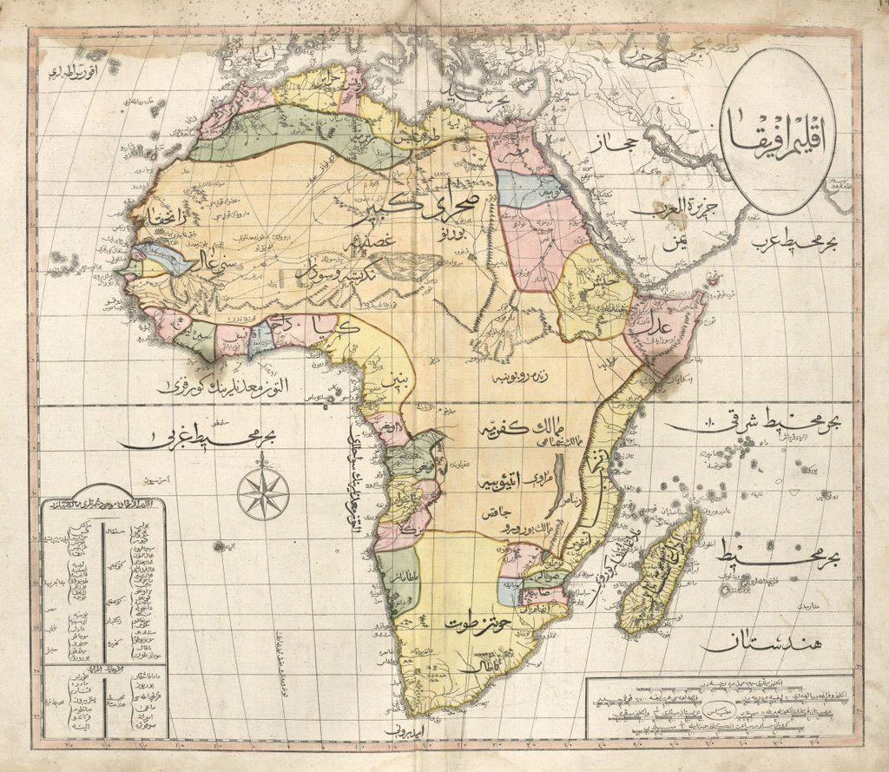
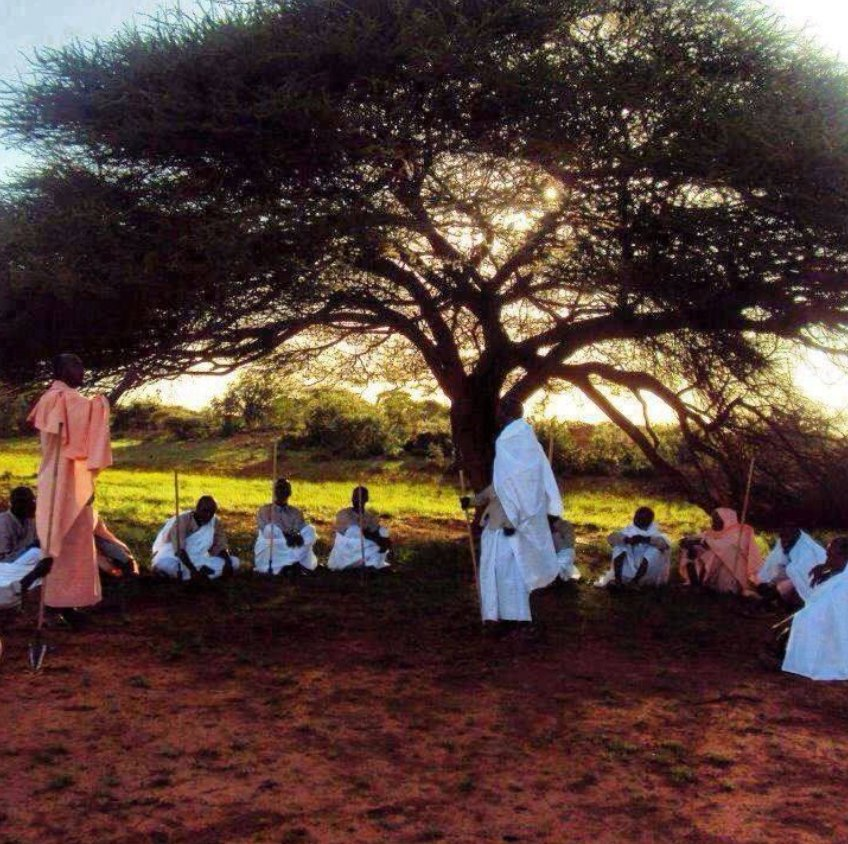

Counter-narratives, primary sources, oral tradition, and eleven eras of history the record left out.
Winston Churchill named him mad in 1910. The Colonial Office files, declassified in 1975, tell a different story: a doctorate in Islamic jurisprudence, four languages, and the finest classical poetry in Somali literary history — composed while leading a 21-year military resistance that required the first aerial bombardment in African history to end.
Read the full counter-narrative
"You fought well, but you fought for chains. We fought for the land our fathers' fathers knew."
— Sayyid Mohamed Abdullah Hassan, Gaala Leeyahay, 1913
ALLITERATIVE CONSTRAINT: EVERY LINE BEGINS WITH 'G' · 87 LINES · COMPOSED ORALLY AFTER THE BATTLE OF DUL MADOBA
Egyptian records named it. Egyptian expeditions sailed there. Egyptian temples depicted its people, houses, and trade goods in detail. The location was never lost — Western archaeology chose not to look at the Somali coast.
Read the evidenceThe standard narrative: no written language until Siad Barre standardized one. The reality: the Osmanya script (1920s) and Borama script (1930s) both predate standardization by decades.
Read the evidence